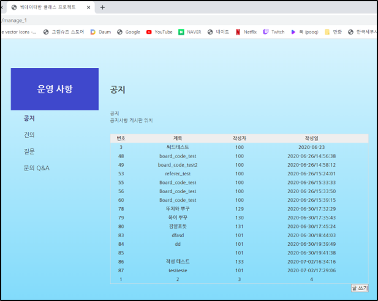
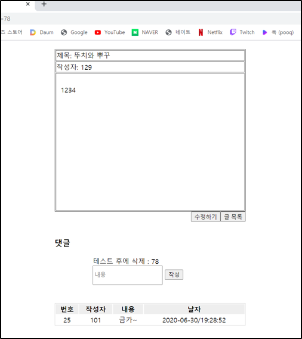
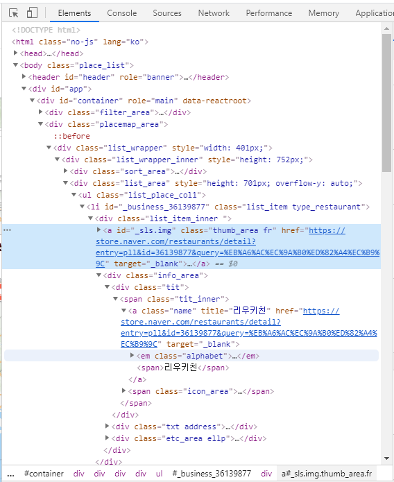
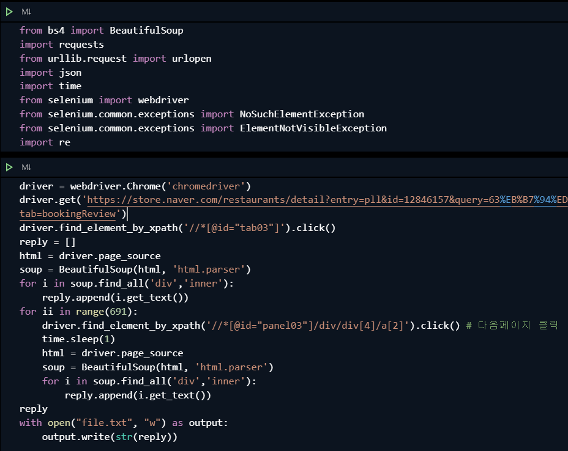

Kwon Soon Bin
Korea Polytechnic University,
IT Business Administration
JAVA Front_end, Back_end 개발자와
데이터 분석가를 꿈꾸는 권순빈입니다.
Experience
프로젝트 기술서작성자 : 권순빈 |
|
|---|---|
| 프로젝트명 | 조인어스 |
| 수행기간 | March 2018 - November 2019 |
| 수행목표 | 안드로이드 앱 기반 택시 공유 어플 제작 |
| 담당역할 | 팀장 : Front_End part |
| 사용기술 | Java, AndroidStudio, DB |
| 프로젝트 성과 | 경영캡스톤디자인 성적 A+ 사회 문제를 해결할 수있는 방향 제시 |
| 세부 수행내용 | |
|
2018년 카카오의 카풀 앱으로 인한 택시업계의 시위로 뜨거워진 주제에 대해 '어떻게하면 이 상황을 해결할 수 있을까?' 라는 생각에서 시작하게된 어플입니다. '카풀로 개인이 돈을 버는 것이 위법이라면, 택시를 카풀로 타는 것을 어떨까?' 라는 아이디어를 기반으로 어플을 제작했습니다. 사회 문제를 해결해 나가는 방향에서 법적인 문제가 발생했습니다. 택시 법상 승객을 태운 택시가 이동 중에 다른 승객을 태우면 불법이라는 것을 발견하였고, 아이디어 자체가 흔들릴 상황이였습니다. 그에 대한 대안으로 출발지와 도착지가 같은 곳에서 탑승과 하차를 하게되는 어플이 만들어지게 되었습니다. |
|
프로젝트 기술서작성자 : 권순빈 |
|
|---|---|
| 프로젝트명 | JAVA Algorithm Project |
| 수행기간 | May 2020 - present |
| 수행목표 | JAVA 알고리즘 능력 향상 |
| 담당역할 | 팀장 : 문제 선정, 풀이 |
| 사용기술 | Java |
| 프로젝트 성과 | 자바 알고리즘 능력 향상 |
| 세부 수행내용 | |
|
학원을 다니면서 자바 알고리즘에 대해서 공부하기 위해 직접 스터디를 개설해 공부했습니다. 스터티 팀장으로 같이 공부할 친구들을 모으고 스터디 계획을 짜고, 알고리즘 공부를 시작했습니다. 스터디에서 코딩을 처음배우는 친구들에게 자바를 알려주었고, 그 친구들이 자바를 배워서 제가 모르는 코드를 만들어왔을 때 정말 뿌듯했던 것 같습니다. 자바를 배우던 중에 블로그를 운영하자는 의견이나왔고, 여러 사람들과 공유하기위해 블로그를 운영하게 되었습니다. blog.naver.com/zxe0214 | |
프로젝트 기술서작성자 : 권순빈 |
|
|---|---|
| 프로젝트명 | Spring Boot 기반 JSP 홈페이지 |
| 수행기간 | May 2020 - July 2020 |
| 수행목표 | Spring 기반 JSP 홈페이지 제작 |
| 담당역할 | 팀원 : beck_end |
| 사용기술 | Java, js, jsp, OracleDB, Springboot |
| 프로젝트 성과 | Springboot에 대한 기본적인 이해 자바스크립트에 대한 이해 향상 |
| 세부 수행내용 | |
|
대한상공회의소 빅데이터플랫폼 과정에서 배운 내용을 바탕으로 제작햇습니다. 회원가입과 로그인, 게시판기능이 있습니다. 많은 친구들과 대규모 웹페이지를 만들어 보자는 취지에서 제작했습니다. 여러 분야 중에서 Back_end파트에 지원하였고 제작 중에 Spring Boot를 처음 사용해 보았습니다. 처음 사용 하기 때문에 Spring에대해 공부하기 시작했고, 모두가 모르는 부분에 대해서는 바로 교수님에게 찾아가 질문하여 해결하였습니다. Spring의 중요성을 느낄 수 있는 프로젝트였습니다. 때문에 Spring 스터디를 만들어 공부를 하고 있습니다. 
login Controller에서 session의 메소드 setAttribute로 사용자 아이디값을 저장해서 글 작성시 id값을 받도록 구현했습니다.  그 Azure를 이용한 웹 DB에서 게시판별 필요한 Board_list를 Dao에서 메소드를 통해 불러옵니다. 
글을 클릭하면 해당 글의 Board_id로 웹DB에서 내용을 호출 및 출력  글을 수정하는 Update도 Dao에 구현했습니다. |
|
프로젝트 기술서작성자 : 권순빈 |
|
|---|---|
| 프로젝트명 | 코로나 데이터 시각화 경진대회 |
| 수행기간 | July 2020 - present |
| 수행목표 | 포스트 코로나 시대 도움되는 인사이트 발굴 |
| 담당역할 | 팀장 : 데이터 전처리, EDA |
| 사용기술 | Python, pandas, numpy |
| 세부 수행내용 | |
|
빅데이터 공모전에 대해 알아보던 중에 코로나 데이터에 관심이 있어서 참여하게 된 경진대회입니다. 많은 데이터 셋 중에서 포스트 코로나 시대에 맞는 인사이트를 도출하고 그 인사이트를 가지고 파이썬으로 시각화하는 것이 목표입니다. 현재 Python을 이용해 데이터 EDA를 하는 과정에 있습니다. 현재도 진행 중인 프로젝트이기 때문에 성과에 대해서는 차후에 적도록 하겠습니다. |
|
프로젝트 기술서작성자 : 권순빈 |
|
|---|---|
| 프로젝트명 | 오늘 점심 뭐먹지? |
| 수행기간 | July 2020 - present |
| 수행목표 | 네이버 맛집 리뷰 성향 분석 |
| 담당역할 | 팀원 : 데이터 크롤링,stopwords 설정, 모델링 |
| 사용기술 | Python, chromedriver |
| 세부 수행내용 | |
|
네이버 맛집 리뷰 크롤링 물리적인 크롤링을 막아둔 네이버 리뷰를 크롤링하기 위해서 chromedriver를 사용하여 xPath를 따와서 크롤링을 시작했습니다.  크롤링을 사용하기 위한 코드입니다. |
|
Education
Korea Polytechnic University
GPA: 4.0
Korea Polytechnic University
GPA: 3.5
Korea Polytechnic University
GPA: 3.5
Korea Polytechnic University
GPA: 4.5
Korea Polytechnic University
GPA: 3.5